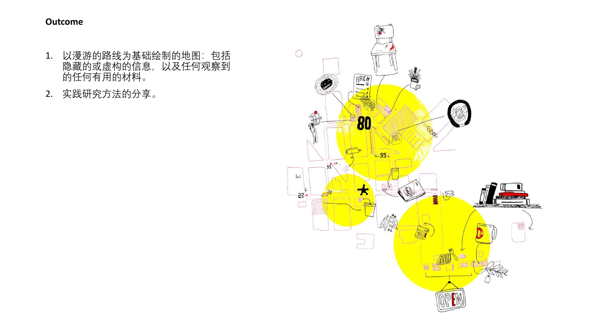
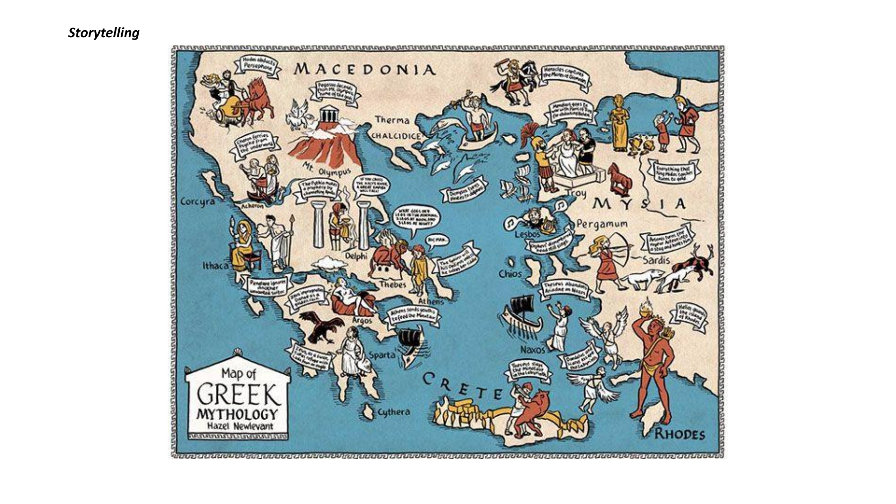
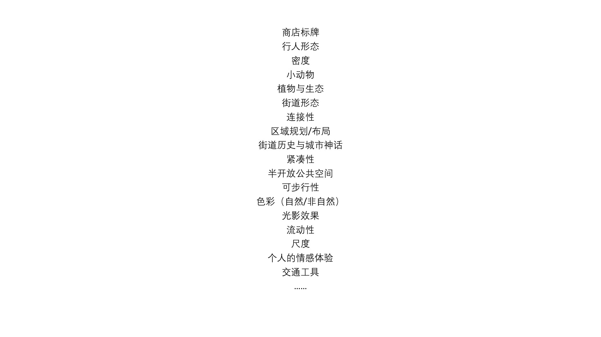

心理地理学与城市神话
我围绕心理地理学与城市神话设计了一套研究型 Citywalk 工作坊。活动从日常环境带来的情绪与行为出发，邀请参与者记录途中遇到的文字、人物、光影和声音，再把行走路线发展成个人地图。
方案安排 10 分钟引入、60 分钟漫游、60 分钟制作和 10 分钟分享，共 140 分钟。引入建立共同问题，漫游收集材料，制作把零散经验组织成地图，分享则让不同人的路径和解释发生联系。







我围绕心理地理学与城市神话设计了一套研究型 Citywalk 工作坊。活动从日常环境带来的情绪与行为出发，邀请参与者记录途中遇到的文字、人物、光影和声音，再把行走路线发展成个人地图。
方案安排 10 分钟引入、60 分钟漫游、60 分钟制作和 10 分钟分享，共 140 分钟。引入建立共同问题，漫游收集材料，制作把零散经验组织成地图，分享则让不同人的路径和解释发生联系。


